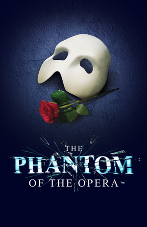
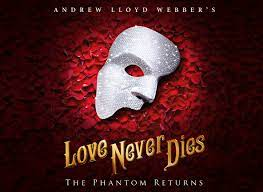
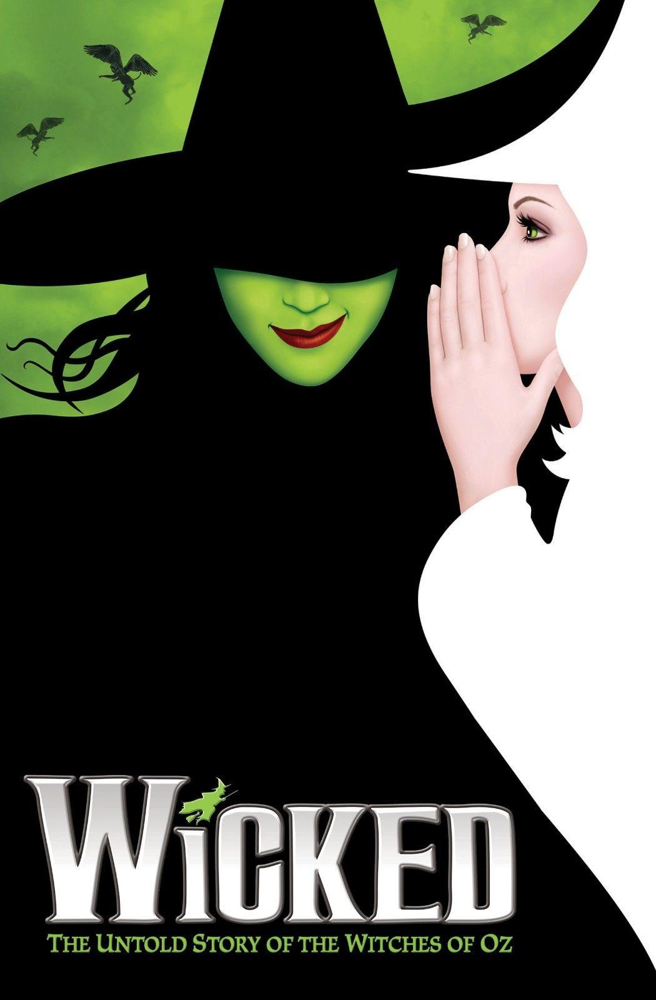
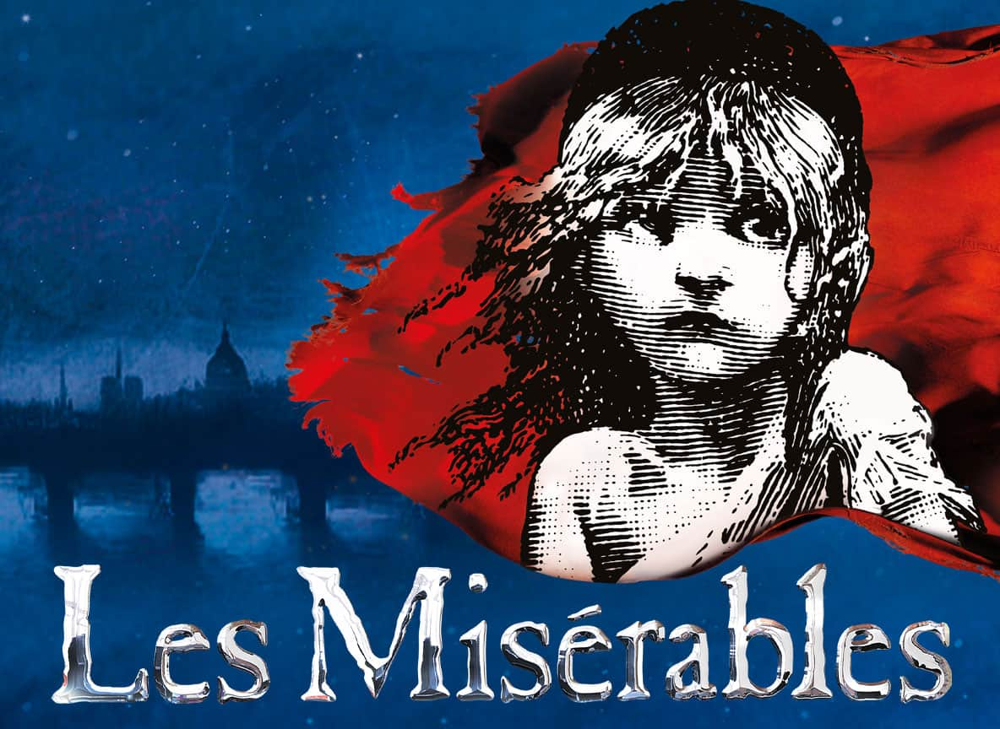
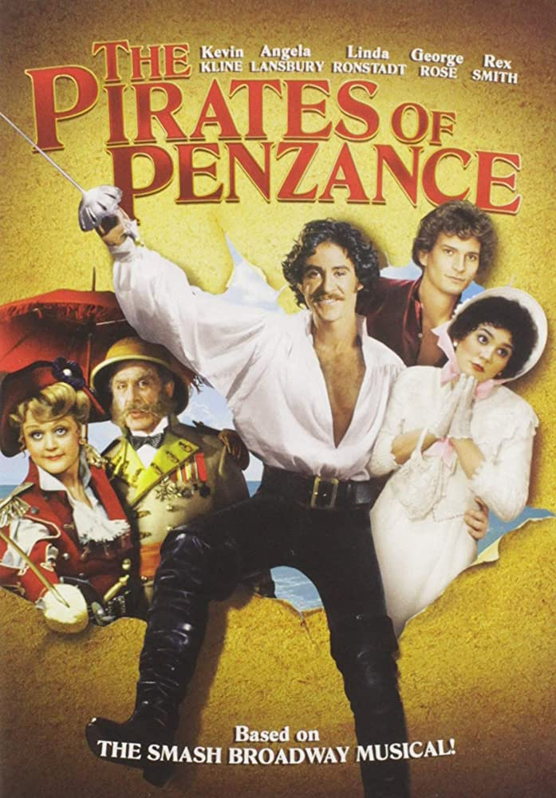
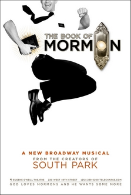
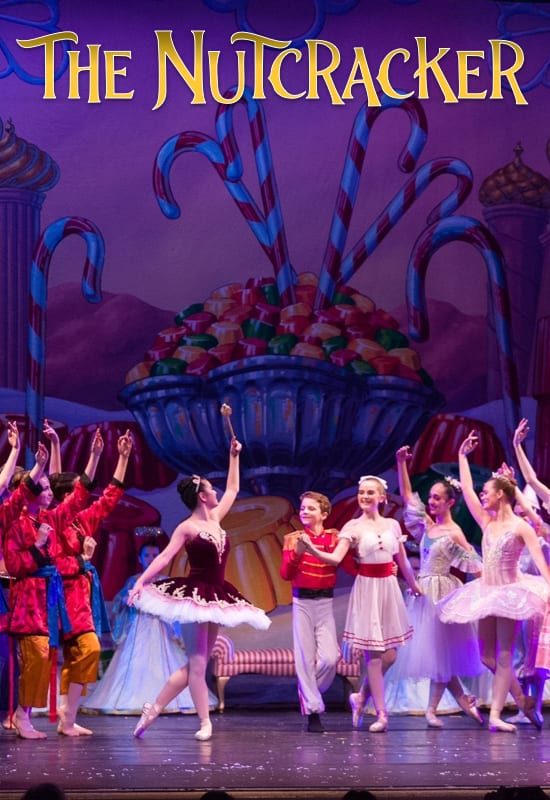
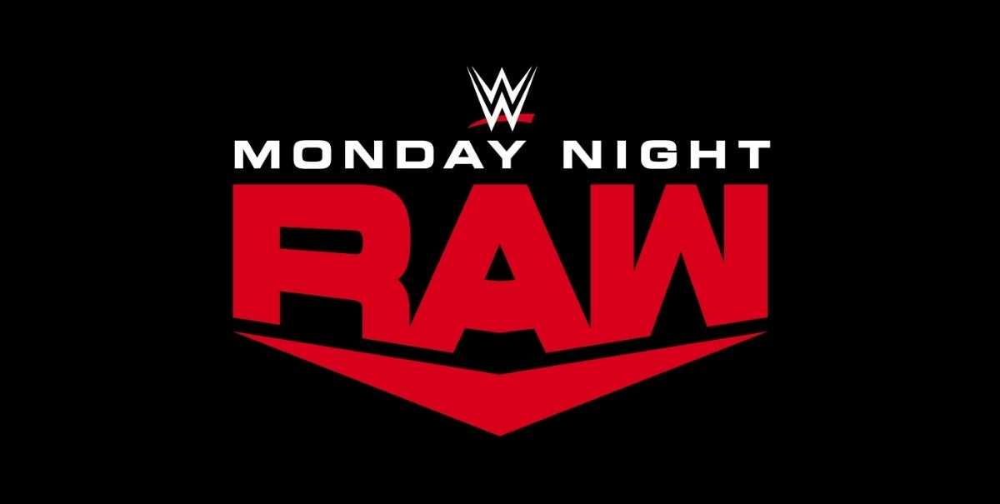

*Every Live Performance I have ever seen, rated and critiqued.
Show |
Description |
Anything Weird? Or was it fun? |
Pros |
Cons |
Rating (Out of 10)? |
|  |
Christine Daae is a down-on-her-luck soprano, but with the help of her mysterious masked mentor, The Phantom (an insane man who is madly in love with her), she rises to the top and becomes a star. However, The Phantom did not account for his student to fall in love with someone who is not him. |
Some rando started yelling threats at another person stopping the show temporarily. Not fun! |
Went to Miami to see this show for my birthday. Had a delicious luxury grilled cheese beforehand in a fancy little restaurant that had absolutely no leg room. That didn't matter, though. The food made it all better. |
Definitely that weird guy. He had to get dragged out of the theatre. |
9/10 |
|  |
The Phantom, now extremely depressed, decides to run a circus as a front to lure back Christine. Christine and her son Gustave (who does not look like his father) are now trapped in a loveless marriage with the man she thought she fell in love with. Does The Phantom have a second chance at love? |
Nope! If it can be described as weird, during the beginning song, the Phantom croaked while singing, making a high-pitched little noise. He got so embarrassed I felt bad for him, but he ended up being one of the best voices of the entire show. |
This was another birthday trip from a few years ago. The cool thing about this show is that it was an official performance, meaning it was the main cast that was a part of the official recording. |
This musical is not well-liked by a majority of theatre enjoyers. Honestly, the plot is an absolute mess. It is one of my favorite musicals, and though it was all over the place plot-wise, it was the experience I had that made it one of my favorites. |
10/10 |
|  |
The green witch from the Wizard of Oz was bullied as a teen, causing her to be bad as an adult! The pink witch tries to help her by being her friend, but it doesn't work out. |
Me and the person I saw the show with did not think any of the jokes were funny. And yet, the room of people we were with laughed in sync with everyone. We just kept looking at each other amazed yet also confused. |
Our confusion at the audience's strange and constant laughter. The opening scene is where they scream about their baby being green. |
It is not a memorable show, and I only saw it a few years ago. I could not name a single song if asked. |
6/10 |
|  |
It's about the French Revolution! A man gets arrested but gets out and lives a better life at the behest of the man who stopped him. He adopts an orphan girl and raises her to adulthood, and a young revolter falls in love with her. |
Yet another one that was lost to time in my head. It makes you wonder how I can see such a monumentally praised show, yet I can't remember where and when I saw it?
But it's different than Wicked because I liked the songs. |
I can't say, it was nice to see it though. |
It was a good show and is the opposite of my Wicked rating, so to speak. The songs were good and I know them, but I cannot remember anything about the performance I saw. |
7.5/10 |
|  |
It's about singing pirates. It has a lot going on, and that is the best way I can describe it. |
Instead of a theatre, it was in a large church on the side of a highway. On the outside, it looked practically abandoned, but inside, it was a big separate auditorium. It was a community performance, and honestly, it was fun. |
It was good! The performers were super talented and played great characters. |
I can't say there were any cons. But this woman in front of me and the person I saw the show with was whispering an explanation of every scene to her young daughter, who seemed very bored. |
9.5/10 |
|  |
It's a musical about Mormons and the Mormon religion, but the people who wrote South Park made it. |
Nothing weird, but honestly, it was great. You can't help but laugh at all the horrible jokes. And the performers were great. |
A great show! No flukes or randos in the crowd. And I got cool merch. |
However, I got plastic button pins. You can't use them for anything, so they're just sitting in their packaging... watching... waiting. |
9/10. Due to unresolved pin usage. |
|  |
A Christmas ballet performance about a young girl getting lost in her dreams before waking up on Christmas day. |
It was nice! I love ballet, and it was a different part of the theatre and a new experience for me and the person I see all these shows with. It was a lovely theatre that looked like something you would see on a cruise ship. |
Ballet is both so complicated and so beautiful at the same time. Seeing it in person rather than in a video format was so nice. |
No cons! |
10/10 |
|  |
Even though it's televised wrestling, I still consider it a theatrical performance. It was 3 hours long, and it's a little hard to explain, considering the lore. If you are interested, Click Here! |
I'm new to wrestling and enjoy it quite a bit. And the fact that I saw a show was a dream come true. But the people that surrounded me and the person I saw the show with were quite the crowds of characters. And I'm cool with that! |
Incredible. A lot of pyrotechnics and loud music, not to mention a bunch of the wrestlers I like had surprise appearances. |
They wanted to have full seats because it was televised. So security would usher in a group of people to the empty seats, and when the people who purchased those seats returned, they had to get up and leave. To summarize, we had to stand up, then sit down several times over. |
10/10 |